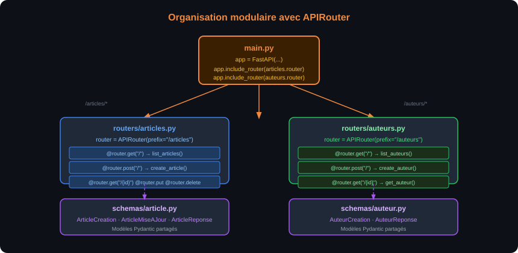
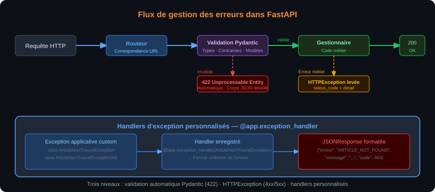

À l'issue de ce chapitre, chaque stagiaire est capable de :
- Structurer un projet FastAPI avec plusieurs routeurs (
APIRouter) et un fichiermain.pypropre - Déclarer des paramètres de chemin (
{id}), de requête (?page=2) et de corps (JSON) avec les types appropriés - Créer et utiliser des modèles Pydantic pour valider les entrées et filtrer les sorties
- Retourner des réponses HTTP avec le code de statut, les en-têtes et le corps corrects
- Lever des exceptions HTTP (
HTTPException) avec le code et le message appropriés - Écrire des gestionnaires
async defpour les opérations I/O-bound et expliquer quandasyncest nécessaire - Appliquer les quatre opérations CRUD (Create, Read, Update, Delete) sur une ressource fictive
Ressources et URLs — la convention REST
Dans une API REST, chaque ressource (entité du domaine métier) est identifiée par une URL. Les URLs doivent être des noms (substantifs), jamais des verbes — c'est la méthode HTTP qui exprime l'action.
| ❌ URL avec verbe (non-REST) | ✅ URL avec nom (REST) | Méthode |
|---|---|---|
/getArticles |
/articles |
GET |
/createArticle |
/articles |
POST |
/updateArticle/42 |
/articles/42 |
PUT / PATCH |
/deleteArticle/42 |
/articles/42 |
DELETE |
La convention d'URL REST pour une ressource articles suit un schéma systématique :
| Opération | Méthode | URL | Corps | Réponse typique |
|---|---|---|---|---|
| Lister | GET |
/articles |
— | 200 + liste JSON |
| Créer | POST |
/articles |
JSON du nouvel article | 201 + article créé |
| Lire un | GET |
/articles/{id} |
— | 200 + article ou 404 |
| Remplacer | PUT |
/articles/{id} |
JSON complet | 200 + article ou 404 |
| Modifier | PATCH |
/articles/{id} |
JSON partiel | 200 + article ou 404 |
| Supprimer | DELETE |
/articles/{id} |
— | 204 ou 200 |
Les ressources hiérarchiques s'expriment par imbrication d'URL : /auteurs/7/articles pour les articles de l'auteur 7. L'imbrication ne doit pas dépasser deux niveaux — au-delà, préférer /articles?auteur_id=7 avec un paramètre de requête.
Organiser le code avec APIRouter
Pour un projet de plus d'une dizaine de routes, tout mettre dans main.py devient ingérable. FastAPI fournit APIRouter pour découper l'application en modules.
api-bibliotheque/
├── main.py ← Instanciation de l'app + inclusion des routeurs
├── routers/
│ ├── __init__.py
│ ├── articles.py ← Routes /articles
│ └── auteurs.py ← Routes /auteurs
├── schemas/
│ ├── __init__.py
│ └── article.py ← Modèles Pydantic
└── requirements.txt
# routers/articles.py
from fastapi import APIRouter
router = APIRouter(prefix="/articles", tags=["Articles"])
@router.get("/")
def list_articles():
return []
@router.get("/{article_id}")
def get_article(article_id: int):
return {"id": article_id}
# main.py
from fastapi import FastAPI
from routers import articles, auteurs
app = FastAPI(title="API Bibliothèque", version="1.0.0")
app.include_router(articles.router)
app.include_router(auteurs.router)
Le paramètre prefix="/articles" évite de répéter /articles dans chaque décorateur. Le paramètre tags=["Articles"] groupe les routes sous un même onglet dans Swagger UI.

Le schéma ci-dessus illustre la séparation entre le point d'entrée main.py, qui inclut les routeurs, et les modules spécialisés (routers/articles.py, routers/auteurs.py) qui définissent les routes de chaque ressource. Les schémas Pydantic sont définis dans schemas/ et importés par les routeurs.
Paramètres de chemin
Un paramètre de chemin est une valeur incluse dans l'URL elle-même, entre accolades dans le décorateur. FastAPI l'extrait, le convertit au type annoté et retourne 422 si la conversion échoue.
from fastapi import APIRouter
router = APIRouter(prefix="/articles", tags=["Articles"])
@router.get("/{article_id}")
def get_article(article_id: int):
"""article_id est extrait de l'URL, converti en int, validé."""
return {"id": article_id, "titre": f"Article {article_id}"}
Les paramètres de chemin peuvent être contraints avec des métadonnées Path :
from fastapi import APIRouter, Path
router = APIRouter(prefix="/articles", tags=["Articles"])
@router.get("/{article_id}")
def get_article(
article_id: int = Path(gt=0, description="Identifiant entier positif de l'article")
):
return {"id": article_id}
gt=0 (greater than 0) invalide les ID négatifs ou nuls avant même d'atteindre le code métier.
Paramètres de requête (query parameters)
Tout paramètre de fonction qui n'est pas dans l'URL ni dans le corps est automatiquement interprété comme un paramètre de requête (?clé=valeur).
from typing import Optional
@router.get("/")
def list_articles(
page: int = 1,
taille: int = 10,
categorie: Optional[str] = None,
):
"""
GET /articles → page=1, taille=10
GET /articles?page=2&taille=5 → page=2, taille=5
GET /articles?categorie=python → filtre par catégorie
"""
return {
"page": page,
"taille": taille,
"categorie": categorie,
"articles": [],
}
Les contraintes s'appliquent avec Query :
from fastapi import Query
@router.get("/")
def list_articles(
page: int = Query(default=1, ge=1, description="Numéro de page (commence à 1)"),
taille: int = Query(default=10, ge=1, le=100, description="Nombre d'articles par page"),
):
...
ge=1 (greater or equal) et le=100 (less or equal) définissent les bornes. FastAPI retourne un 422 clair si elles sont dépassées.
Corps de requête JSON
Pour les méthodes POST, PUT et PATCH, les données sont transmises dans le corps de la requête au format JSON. FastAPI déclare un corps en annotant un paramètre avec un modèle Pydantic.
from pydantic import BaseModel
from fastapi import APIRouter
router = APIRouter(prefix="/articles", tags=["Articles"])
class ArticleCreation(BaseModel):
titre: str
contenu: str
publie: bool = False
@router.post("/", status_code=201)
def create_article(article: ArticleCreation):
"""
Reçoit un corps JSON :
{"titre": "Mon article", "contenu": "...", "publie": false}
"""
return {"id": 1, **article.model_dump()}
FastAPI détecte automatiquement qu'article est un modèle Pydantic (pas un type primitif) et le lit depuis le corps de la requête. Il génère le schéma JSON correspondant dans Swagger UI, avec les champs requis mis en évidence.
model_dump() remplace dict() depuis Pydantic v2La méthode dict() des modèles Pydantic est dépréciée depuis Pydantic v2 (utilisée avec FastAPI ≥ 0.100). Utiliser model_dump() à la place — dict() fonctionne encore mais génère des avertissements de dépréciation.
Bases de Pydantic v2
Pydantic est une bibliothèque de validation de données par annotation de type. Un modèle Pydantic est une classe qui hérite de BaseModel et dont les attributs sont des champs typés.
from pydantic import BaseModel, Field
from datetime import datetime
from typing import Optional
class Article(BaseModel):
id: int
titre: str
contenu: str
publie: bool = False
date_creation: datetime
categorie: Optional[str] = None
nb_vues: int = Field(default=0, ge=0)
Quand Pydantic reçoit des données (dict Python, JSON, etc.) à valider contre ce modèle :
- Les champs sans valeur par défaut sont obligatoires (
id,titre,contenu,date_creation) - Les champs avec valeur par défaut sont optionnels (
publie,categorie,nb_vues) - Pydantic effectue de la coercition de type : la chaîne
"42"est automatiquement convertie enintpour un champint - Si un champ obligatoire est absent ou si la coercition échoue, Pydantic lève une
ValidationErrorque FastAPI transforme en422
Schémas d'entrée vs schémas de sortie
Un principe clé en API REST : les données reçues (entrée) ne sont pas nécessairement les mêmes que les données exposées (sortie). Il est courant de définir plusieurs modèles pour la même entité.
from pydantic import BaseModel, Field
from datetime import datetime
from typing import Optional
# Modèle pour la CRÉATION (entrée) — pas d'id ni de date (générés côté serveur)
class ArticleCreation(BaseModel):
titre: str = Field(min_length=3, max_length=200)
contenu: str = Field(min_length=10)
categorie: Optional[str] = None
# Modèle pour la MODIFICATION partielle (entrée) — tous les champs optionnels
class ArticleMiseAJour(BaseModel):
titre: Optional[str] = Field(default=None, min_length=3, max_length=200)
contenu: Optional[str] = Field(default=None, min_length=10)
categorie: Optional[str] = None
# Modèle pour la RÉPONSE (sortie) — inclut id, date et champs calculés
class ArticleReponse(BaseModel):
id: int
titre: str
contenu: str
categorie: Optional[str]
publie: bool
date_creation: datetime
nb_vues: int
model_config = {"from_attributes": True} # Permet la création depuis un ORM (Chapitre 4)
La séparation entrée/sortie permet de :
- Empêcher les stagiaires d'injecter des champs comme
idoudate_creationlors de la création - Masquer des champs sensibles (mot de passe hashé) de la réponse
- Documenter séparément les schémas d'entrée et de sortie dans Swagger UI
Valider des types courants avec Field
from pydantic import BaseModel, Field, EmailStr
from typing import List
class Auteur(BaseModel):
nom: str = Field(min_length=2, max_length=100)
email: EmailStr # Valide le format email
age: int = Field(ge=18, le=120)
tags: List[str] = Field(default_factory=list) # Liste vide par défaut
biographie: str = Field(default="", max_length=2000)
EmailStr nécessite email-validatorPour utiliser EmailStr, installez : pip install "pydantic[email]". Ce validateur vérifie la syntaxe de l'email (présence du @, domaine valide) mais n'envoie pas de mail de vérification.
response_model — filtrer la sortie
Le paramètre response_model d'un décorateur de route indique à FastAPI quel modèle utiliser pour sérialiser et filtrer la réponse. Cela garantit que les champs non présents dans le modèle de sortie ne sont jamais exposés.
# Base de données fictive en mémoire
articles_db: list[dict] = [
{"id": 1, "titre": "Intro FastAPI", "contenu": "...", "publie": True,
"date_creation": "2024-01-15T10:00:00", "nb_vues": 150, "categorie": "python",
"mot_de_passe_interne": "ne_pas_exposer"}, # Champ interne
]
@router.get("/{article_id}", response_model=ArticleReponse)
def get_article(article_id: int):
article = next((a for a in articles_db if a["id"] == article_id), None)
if article is None:
raise HTTPException(status_code=404, detail="Article introuvable")
return article
# mot_de_passe_interne ne sera PAS dans la réponse — filtré par response_model
Sans response_model, FastAPI sérialise le dictionnaire entier retourné par le gestionnaire — y compris les champs sensibles (jetons, mots de passe hashés, données internes). Toujours définir un response_model explicite pour les routes qui retournent des entités.
Codes de statut avec status_code
Par défaut, FastAPI retourne 200 OK pour toutes les routes. Pour changer le code de succès, utiliser le paramètre status_code du décorateur.
from fastapi import APIRouter
from fastapi.responses import Response
router = APIRouter(prefix="/articles", tags=["Articles"])
@router.post("/", status_code=201) # 201 Created pour la création
def create_article(article: ArticleCreation) -> ArticleReponse:
...
@router.delete("/{article_id}", status_code=204) # 204 No Content pour la suppression
def delete_article(article_id: int):
...
return None # Corps vide pour 204
Retourner une Response personnalisée
Pour contrôler précisément les en-têtes ou le contenu, retourner une instance Response (ou une de ses sous-classes).
from fastapi.responses import JSONResponse, Response
@router.get("/{article_id}")
def get_article(article_id: int):
article = get_from_db(article_id)
if article is None:
return JSONResponse(
status_code=404,
content={"detail": "Article introuvable", "id": article_id}
)
return JSONResponse(
content=article,
headers={"X-Article-Categorie": article.get("categorie", "")},
)
Dans la pratique, lever une HTTPException (section suivante) est plus courant que retourner un JSONResponse d'erreur manuellement.
HTTPException
HTTPException est l'exception FastAPI à lever pour retourner une réponse d'erreur HTTP structurée. Elle interrompt immédiatement l'exécution du gestionnaire et retourne une réponse JSON avec le code et le message fournis.
from fastapi import APIRouter, HTTPException
router = APIRouter(prefix="/articles", tags=["Articles"])
# Base de données fictive
articles_db: dict[int, dict] = {
1: {"id": 1, "titre": "Intro FastAPI", "contenu": "...", "publie": True},
2: {"id": 2, "titre": "Pydantic v2", "contenu": "...", "publie": False},
}
@router.get("/{article_id}", response_model=ArticleReponse)
def get_article(article_id: int):
if article_id not in articles_db:
raise HTTPException(
status_code=404,
detail=f"Article {article_id} introuvable"
)
return articles_db[article_id]
La réponse générée est :
HTTP/1.1 404 Not Found
Content-Type: application/json
{"detail": "Article 99 introuvable"}
Le champ detail peut être une chaîne, un dictionnaire ou une liste — FastAPI le sérialise tel quel dans le corps JSON.
# Erreur avec corps détaillé
raise HTTPException(
status_code=422,
detail=[
{"field": "titre", "msg": "Le titre existe déjà"},
{"field": "categorie", "msg": "Catégorie non reconnue"},
]
)
Handlers d'exception personnalisés
Pour personnaliser globalement le format de réponse d'une exception, enregistrer un handler avec @app.exception_handler.
from fastapi import FastAPI, Request
from fastapi.responses import JSONResponse
app = FastAPI()
class ArticleNonTrouveException(Exception):
def __init__(self, article_id: int):
self.article_id = article_id
@app.exception_handler(ArticleNonTrouveException)
async def article_not_found_handler(request: Request, exc: ArticleNonTrouveException):
return JSONResponse(
status_code=404,
content={
"erreur": "ARTICLE_NOT_FOUND",
"message": f"L'article {exc.article_id} n'existe pas",
"code": 404,
},
)
@app.get("/articles/{article_id}")
def get_article(article_id: int):
if article_id not in articles_db:
raise ArticleNonTrouveException(article_id=article_id)
return articles_db[article_id]
Ce mécanisme permet de centraliser le format des erreurs de l'API et d'assurer leur cohérence sans dupliquer le code de formatage dans chaque gestionnaire.

Le schéma ci-dessus représente les trois niveaux de gestion des erreurs dans FastAPI : la validation automatique Pydantic (422), les HTTPException levées dans le code métier, et les handlers d'exception personnalisés pour les erreurs applicatives.
Voici un module complet implémentant les quatre opérations CRUD sur une ressource articles stockée en mémoire. Cet exemple synthétise les notions précédentes.
# routers/articles.py
from fastapi import APIRouter, HTTPException, Path, Query
from pydantic import BaseModel, Field
from datetime import datetime
from typing import Optional, List
router = APIRouter(prefix="/articles", tags=["Articles"])
# --- Schémas Pydantic ---
class ArticleCreation(BaseModel):
titre: str = Field(min_length=3, max_length=200)
contenu: str = Field(min_length=10)
categorie: Optional[str] = None
class ArticleMiseAJour(BaseModel):
titre: Optional[str] = Field(default=None, min_length=3, max_length=200)
contenu: Optional[str] = Field(default=None, min_length=10)
categorie: Optional[str] = None
class ArticleReponse(BaseModel):
id: int
titre: str
contenu: str
categorie: Optional[str]
publie: bool
date_creation: datetime
# --- Base de données simulée ---
_compteur_id = 0
articles_db: dict[int, dict] = {}
def _nouvel_id() -> int:
global _compteur_id
_compteur_id += 1
return _compteur_id
# --- Routes ---
@router.get("/", response_model=List[ArticleReponse])
def list_articles(
page: int = Query(default=1, ge=1),
taille: int = Query(default=10, ge=1, le=100),
categorie: Optional[str] = None,
):
"""Liste les articles avec pagination et filtre optionnel par catégorie."""
articles = list(articles_db.values())
if categorie:
articles = [a for a in articles if a.get("categorie") == categorie]
debut = (page - 1) * taille
return articles[debut : debut + taille]
@router.post("/", response_model=ArticleReponse, status_code=201)
def create_article(article: ArticleCreation):
"""Crée un nouvel article et retourne l'article créé avec son ID."""
nouvel_id = _nouvel_id()
nouvel_article = {
"id": nouvel_id,
**article.model_dump(),
"publie": False,
"date_creation": datetime.utcnow(),
}
articles_db[nouvel_id] = nouvel_article
return nouvel_article
@router.get("/{article_id}", response_model=ArticleReponse)
def get_article(article_id: int = Path(gt=0)):
"""Retourne l'article correspondant à l'ID ou 404."""
if article_id not in articles_db:
raise HTTPException(status_code=404, detail=f"Article {article_id} introuvable")
return articles_db[article_id]
@router.put("/{article_id}", response_model=ArticleReponse)
def replace_article(article_id: int, article: ArticleCreation):
"""Remplace complètement l'article (PUT = remplacement total)."""
if article_id not in articles_db:
raise HTTPException(status_code=404, detail=f"Article {article_id} introuvable")
articles_db[article_id].update({
**article.model_dump(),
"date_creation": articles_db[article_id]["date_creation"], # Conserve la date d'origine
})
return articles_db[article_id]
@router.patch("/{article_id}", response_model=ArticleReponse)
def update_article(article_id: int, article: ArticleMiseAJour):
"""Met à jour partiellement l'article (PATCH = modification partielle)."""
if article_id not in articles_db:
raise HTTPException(status_code=404, detail=f"Article {article_id} introuvable")
mises_a_jour = article.model_dump(exclude_none=True) # Ignore les champs None
articles_db[article_id].update(mises_a_jour)
return articles_db[article_id]
@router.delete("/{article_id}", status_code=204)
def delete_article(article_id: int = Path(gt=0)):
"""Supprime l'article ou retourne 404."""
if article_id not in articles_db:
raise HTTPException(status_code=404, detail=f"Article {article_id} introuvable")
del articles_db[article_id]
exclude_none=True pour le PATCHmodel_dump(exclude_none=True) retourne uniquement les champs dont la valeur n'est pas None. C'est le mécanisme clé du PATCH : si le client n'envoie que {"titre": "Nouveau titre"}, seul titre est mis à jour — contenu et categorie restent inchangés dans la base.
Quand utiliser async def ?
FastAPI supporte à la fois les fonctions synchrones (def) et asynchrones (async def). Le choix dépend des opérations effectuées dans le gestionnaire.
Utiliser async def quand le gestionnaire effectue des opérations I/O-bound qui ont un équivalent asynchrone : requêtes base de données (SQLAlchemy async, Tortoise ORM), appels HTTP sortants (httpx), lecture/écriture de fichiers (aiofiles), appels à des services externes.
Utiliser def quand le gestionnaire effectue uniquement des calculs CPU-bound ou des opérations synchrones sans alternative async disponible. FastAPI exécute automatiquement les fonctions synchrones dans un thread pool pour éviter de bloquer la boucle d'événements.
import asyncio
import httpx
# Gestionnaire asynchrone — approprié car attend une réponse réseau
@router.get("/meteo/{ville}")
async def get_meteo(ville: str):
"""Interroge une API météo tierce — opération I/O réseau."""
async with httpx.AsyncClient() as client:
response = await client.get(
f"https://api.exemple-meteo.com/v1/current?q={ville}"
)
response.raise_for_status()
return response.json()
# Gestionnaire synchrone — approprié pour du calcul pur
@router.get("/calcul/{n}")
def calcul_fibonacci(n: int):
"""Calcul CPU-bound — pas d'I/O, synchrone est correct."""
a, b = 0, 1
for _ in range(n):
a, b = b, a + b
return {"n": n, "resultat": a}
async defDans un gestionnaire async def, éviter les appels bloquants synchrones (ex. time.sleep(), requests.get(), opérations SQLAlchemy synchrones lentes). Ces appels bloquent la boucle d'événements entière et annulent tout le bénéfice de l'asynchrone. Utiliser les équivalents async : await asyncio.sleep(), httpx.AsyncClient, SQLAlchemy async.
Paralléliser des appels asynchrones
L'un des avantages de async/await est la parallélisation de plusieurs opérations I/O indépendantes.
import asyncio
import httpx
@router.get("/tableau-de-bord")
async def get_tableau_de_bord(utilisateur_id: int):
"""
Récupère en parallèle les données utilisateur, ses commandes et ses notifications.
Sans async : 3 appels séquentiels → ~900ms.
Avec asyncio.gather : 3 appels parallèles → ~300ms.
"""
async with httpx.AsyncClient() as client:
profil_tache = client.get(f"/users/{utilisateur_id}")
commandes_tache = client.get(f"/orders?user={utilisateur_id}")
notifs_tache = client.get(f"/notifications?user={utilisateur_id}")
profil, commandes, notifs = await asyncio.gather(
profil_tache, commandes_tache, notifs_tache
)
return {
"profil": profil.json(),
"commandes": commandes.json(),
"notifications": notifs.json(),
}
asyncio.gather() lance les trois coroutines en parallèle et attend que toutes trois soient terminées. La durée totale est celle de la plus lente — pas la somme des trois.
Contexte de vie de l'application — lifespan
Pour initialiser des ressources partagées (pool de connexions base de données, client HTTP réutilisable) au démarrage de l'application et les libérer à l'arrêt, FastAPI fournit le gestionnaire de contexte lifespan.
from contextlib import asynccontextmanager
from fastapi import FastAPI
@asynccontextmanager
async def lifespan(app: FastAPI):
# Code exécuté au DÉMARRAGE (avant de traiter les premières requêtes)
print("Démarrage de l'application — initialisation des ressources")
app.state.http_client = httpx.AsyncClient()
yield # L'application est opérationnelle entre les deux
# Code exécuté À L'ARRÊT (après la dernière requête)
await app.state.http_client.aclose()
print("Arrêt de l'application — ressources libérées")
app = FastAPI(lifespan=lifespan)
Le gestionnaire lifespan remplace les événements startup et shutdown dépréciés depuis FastAPI 0.93.
app.state pour les ressources partagéesapp.state est un namespace attaché à l'application FastAPI, accessible depuis n'importe quel gestionnaire via request.app.state. C'est le mécanisme recommandé pour partager un pool de connexions ou un client HTTP entre toutes les requêtes — à distinguer des dépendances (Chapitre 3) qui créent des ressources par requête.
Validators Pydantic v2
Pour des validations métier non exprimables avec Field, Pydantic v2 fournit les décorateurs @field_validator et @model_validator.
from pydantic import BaseModel, Field, field_validator, model_validator
from typing import Optional
import re
class ArticleCreation(BaseModel):
titre: str = Field(min_length=3, max_length=200)
slug: Optional[str] = None
contenu: str = Field(min_length=10)
tags: list[str] = Field(default_factory=list)
@field_validator("slug")
@classmethod
def slug_format_valide(cls, v: Optional[str]) -> Optional[str]:
"""Le slug ne peut contenir que des lettres minuscules, chiffres et tirets."""
if v is not None and not re.match(r"^[a-z0-9-]+$", v):
raise ValueError("Le slug ne peut contenir que des caractères a-z, 0-9 et -")
return v
@field_validator("tags")
@classmethod
def tags_en_minuscules(cls, v: list[str]) -> list[str]:
return [tag.lower().strip() for tag in v]
@model_validator(mode="after")
def generer_slug_si_absent(self) -> "ArticleCreation":
"""Génère automatiquement un slug depuis le titre si non fourni."""
if self.slug is None:
self.slug = re.sub(r"[^a-z0-9]+", "-", self.titre.lower()).strip("-")
return self
Le @field_validator est appelé pour un champ spécifique. Le @model_validator(mode="after") est appelé après que tous les champs ont été validés, avec accès à l'objet entier.
Types union et discriminants
from typing import Union, Literal
from pydantic import BaseModel
class ArticleTexte(BaseModel):
type: Literal["texte"]
titre: str
contenu: str
class ArticleVideo(BaseModel):
type: Literal["video"]
titre: str
url_video: str
duree_secondes: int
# Union discriminante — Pydantic choisit le bon modèle selon `type`
TypeArticle = Union[ArticleTexte, ArticleVideo]
Ce pattern évite une explosion de routes séparées quand plusieurs variantes d'une ressource coexistent.
Enrichir la documentation Swagger
@router.post(
"/",
response_model=ArticleReponse,
status_code=201,
summary="Créer un article",
description="""
Crée un nouvel article dans la base de données.
L'identifiant est généré automatiquement côté serveur.
La date de création est définie au moment de la requête.
""",
response_description="L'article créé avec son identifiant et sa date de création",
responses={
409: {"description": "Un article avec ce titre existe déjà"},
},
)
def create_article(article: ArticleCreation):
...
Les paramètres summary, description et response_description alimentent directement Swagger UI. Le paramètre responses permet de documenter les codes d'erreur non-standards pour que les consommateurs de l'API sachent les traiter.
Tags et groupes
from fastapi import FastAPI
app = FastAPI(
openapi_tags=[
{"name": "Articles", "description": "Gestion des articles du catalogue"},
{"name": "Auteurs", "description": "Gestion des profils auteurs"},
{"name": "Santé", "description": "Endpoints de monitoring"},
]
)
Les tags correspondent aux tags=["Articles"] passés aux APIRouter et organisent visuellement les endpoints dans Swagger UI.
Exercice 1 — API CRUD d'une ressource `taches`
Implémentez une API REST complète pour gérer une liste de tâches (to-do list) en mémoire.
Ressource Tache :
id: entier (généré côté serveur)titre: chaîne, 3–100 caractèresdescription: chaîne optionnelleterminee: booléen,Falsepar défautpriorite: entier de 1 à 5,3par défautdate_creation: datetime (générée côté serveur)
Routes à implémenter :
| Méthode | URL | Comportement |
|---|---|---|
GET |
/taches |
Liste toutes les tâches. Filtre optionnel ?terminee=true/false |
POST |
/taches |
Crée une tâche, retourne 201 avec l'objet créé |
GET |
/taches/{id} |
Retourne la tâche ou 404 |
PATCH |
/taches/{id} |
Met à jour partiellement, retourne l'objet modifié |
DELETE |
/taches/{id} |
Supprime la tâche, retourne 204 |
Critères de validation :
- Schémas Pydantic distincts pour la création, la mise à jour (tous champs optionnels) et la réponse
response_modeldéfini sur toutes les routesGET /taches/abcretourne422,GET /taches/999retourne404- La pagination optionnelle
?page=1&taille=5est implémentée surGET /taches - Tous les endpoints sont visibles et testables dans Swagger UI
Aide — pas à pas guidé
Vous allez construire pas à pas une API de gestion de tâches (to-do list) avec FastAPI.
Étape 1 — Préparer la structure du projet
Réutilisez ou créez un projet api-taches avec la structure :
api-taches/
├── main.py
├── routers/
│ ├── __init__.py
│ └── taches.py
├── schemas/
│ ├── __init__.py
│ └── tache.py
└── requirements.txt
Étape 2 — Définir les schémas Pydantic (schemas/tache.py)
from pydantic import BaseModel, Field
from datetime import datetime
from typing import Optional
class TacheCreation(BaseModel):
titre: str = Field(min_length=3, max_length=100)
description: Optional[str] = None
terminee: bool = False
priorite: int = Field(default=3, ge=1, le=5)
class TacheMiseAJour(BaseModel):
titre: Optional[str] = Field(default=None, min_length=3, max_length=100)
description: Optional[str] = None
terminee: Optional[bool] = None
priorite: Optional[int] = Field(default=None, ge=1, le=5)
class TacheReponse(BaseModel):
id: int
titre: str
description: Optional[str]
terminee: bool
priorite: int
date_creation: datetime
Étape 3 — Écrire le routeur (routers/taches.py)
from fastapi import APIRouter, HTTPException, Path, Query
from schemas.tache import TacheCreation, TacheMiseAJour, TacheReponse
from datetime import datetime
from typing import Optional, List
router = APIRouter(prefix="/taches", tags=["Tâches"])
# Stockage en mémoire
_id_counter = 0
taches_db: dict[int, dict] = {}
def _nouvel_id() -> int:
global _id_counter
_id_counter += 1
return _id_counter
@router.get("/", response_model=List[TacheReponse])
def list_taches(
page: int = Query(default=1, ge=1),
taille: int = Query(default=10, ge=1, le=100),
terminee: Optional[bool] = None,
):
taches = list(taches_db.values())
if terminee is not None:
taches = [t for t in taches if t["terminee"] == terminee]
debut = (page - 1) * taille
return taches[debut:debut + taille]
@router.post("/", response_model=TacheReponse, status_code=201)
def create_tache(tache: TacheCreation):
nid = _nouvel_id()
nouvelle = {"id": nid, **tache.model_dump(), "date_creation": datetime.utcnow()}
taches_db[nid] = nouvelle
return nouvelle
@router.get("/{tache_id}", response_model=TacheReponse)
def get_tache(tache_id: int = Path(gt=0)):
if tache_id not in taches_db:
raise HTTPException(status_code=404, detail=f"Tâche {tache_id} introuvable")
return taches_db[tache_id]
@router.patch("/{tache_id}", response_model=TacheReponse)
def update_tache(tache_id: int, tache: TacheMiseAJour):
if tache_id not in taches_db:
raise HTTPException(status_code=404, detail=f"Tâche {tache_id} introuvable")
maj = tache.model_dump(exclude_none=True)
taches_db[tache_id].update(maj)
return taches_db[tache_id]
@router.delete("/{tache_id}", status_code=204)
def delete_tache(tache_id: int = Path(gt=0)):
if tache_id not in taches_db:
raise HTTPException(status_code=404, detail=f"Tâche {tache_id} introuvable")
del taches_db[tache_id]
Étape 4 — Écrire main.py
from fastapi import FastAPI
from routers import taches
app = FastAPI(title="API Tâches", version="1.0.0")
app.include_router(taches.router)
Étape 5 — Tester via Swagger UI
fastapi dev main.py- Ouvrir
http://localhost:8000/docs - Créer deux tâches avec
POST /taches - Lister avec
GET /taches - Filtrer les tâches terminées :
GET /taches?terminee=false - Mettre à jour une tâche :
PATCH /taches/1avec{"terminee": true} - Supprimer une tâche :
DELETE /taches/1 - Tester
GET /taches/abc→ vérifier le422 - Tester
GET /taches/999→ vérifier le404
Exercice 2 — Gestionnaire d'erreurs uniforme
L'objectif est de créer un handler d'exception personnalisé qui uniformise le format de toutes les erreurs de l'API.
Format d'erreur cible :
{
"erreur": "RESSOURCE_INTROUVABLE",
"message": "La tâche 42 n'existe pas",
"code": 404,
"chemin": "/taches/42"
}
Travail à réaliser :
- Définissez une exception
TacheIntrouvable(Exception)avec un attributtache_id: int - Enregistrez un handler sur
appqui retourne le format JSON ci-dessus pour cette exception - Modifiez
GET /taches/{id}etDELETE /taches/{id}pour leverTacheIntrouvableplutôt queHTTPException - Vérifiez via Swagger UI que le format de l'erreur est bien celui attendu
Critère bonus : surcharger également le handler de RequestValidationError (erreurs Pydantic) pour qu'elles utilisent le même format {"erreur": "VALIDATION_ERROR", ...}.
Aide — pas à pas guidé
Étape 1 — Définir l'exception personnalisée
Dans main.py (ou dans un fichier exceptions.py), ajoutez :
class TacheIntrouvable(Exception):
def __init__(self, tache_id: int):
self.tache_id = tache_id
Étape 2 — Enregistrer le handler
from fastapi import FastAPI, Request
from fastapi.responses import JSONResponse
app = FastAPI(title="API Tâches", version="1.0.0")
@app.exception_handler(TacheIntrouvable)
async def tache_not_found_handler(request: Request, exc: TacheIntrouvable):
return JSONResponse(
status_code=404,
content={
"erreur": "RESSOURCE_INTROUVABLE",
"message": f"La tâche {exc.tache_id} n'existe pas",
"code": 404,
"chemin": str(request.url.path),
},
)
Étape 3 — Modifier le routeur
Remplacez les HTTPException des routes GET /{id} et DELETE /{id} :
# Avant
raise HTTPException(status_code=404, detail=f"Tâche {tache_id} introuvable")
# Après
raise TacheIntrouvable(tache_id=tache_id)
Étape 4 — Vérification
- Relancez le serveur
- Testez
GET /taches/999via Swagger UI ou Postman - Vérifiez que le corps de réponse correspond au format attendu :
json {"erreur": "RESSOURCE_INTROUVABLE", "message": "La tâche 999 n'existe pas", "code": 404, "chemin": "/taches/999"}